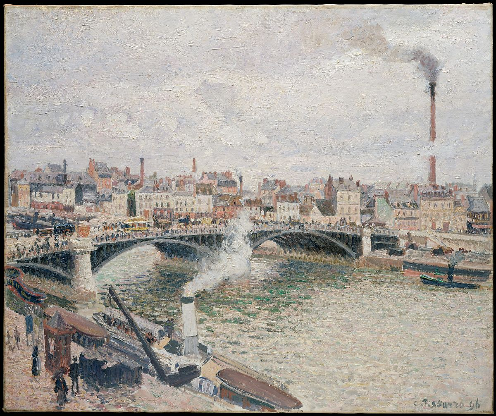

<head>
<meta charset="UTF-8" />
<meta name="keywords" content="drawing, painting" />
<meta name="description" content="drawings by Sunjy" />
<title>Sunjy</title>
<link rel="shortcut icon" type="image/x-icon" href="../../mImages/mCommon/favicon.ico" media="screen" />
<link rel="stylesheet" type="text/css" href="../../mCsses/mCommon/mCssA.css" />
<link rel="stylesheet" type="text/css" href="../../mCsses/mCommon/mCssB.css" />
<link rel="stylesheet" type="text/css" href="../../mCsses/mCommon/mCssC.css" />
<link rel="stylesheet" type="text/css" href="../../mCsses/mCommon/mCssD.css" />
<link rel="stylesheet" type="text/css" href="../../mCsses/mContent/mCssA.css" />
<link rel="stylesheet" type="text/css" href="../../mCsses/mContent/mCssB.css" />
<link rel="stylesheet" type="text/css" href="../../mCsses/mContent/mCssC.css" />
<link rel="stylesheet" type="text/css" href="../../mCsses/mContent/mCssD.css" />
</head>
<script type="text/javascript" src="../../mScripts/mContent/mContentAA.js" /></script>
<script type="text/javascript" src="../../mScripts/mContent/mContentAB.js" /></script>
<script type="text/javascript" src="../../mScripts/mContent/mContentAC.js" /></script>
<script type="text/javascript" src="../../mScripts/mContent/mContentAD.js" /></script>
<script type="text/javascript"></script> 
<script type="text/javascript">
document.write('<div class="mImgAbsolute"></div>');
/*
document.write('<p class="mFontSizeBColor" />From a white paper...</p>');
document.write('<table class="center"><tr><td>');
document.write('');
document.write('</td></tr></table>');
*/
</script>


<script type="text/javascript">
document.write('<p class="mFontSizeBColor" />Morning, An Overcast Day, Rouen</p>');
document.write('<p class="mFontSizeSColor" />By Camille Pissarro, 1896. While visiting Rouen in spring and fall 1896, Pissarro wrote of his interest in the &#34;motif of the iron bridge on a rainy day, with much traffic, carriages, pedestrians, workers on the quays, boats, smoke, mist in the distance, the whole scene fraught with animation and life.&#34; The present canvas is one of several views of the Boieldieu Bridge, or Grand Pont, that Pissarro painted from a room in the Hôtel d&#39;Angleterre. Its title, <i>Matin, Temps Gris, Rouen (Morning, An Overcast Day, Rouen)</i>, is thought to be the artist’s own.</p>');
document.write('<table class="center" /><tr><td>');
document.write('Matin, Temps Gris, Rouen (Morning, An Overcast Day, Rouen)</i>, is thought to be the artist’s own." />');
document.write('</td></tr></table>');
</script>


